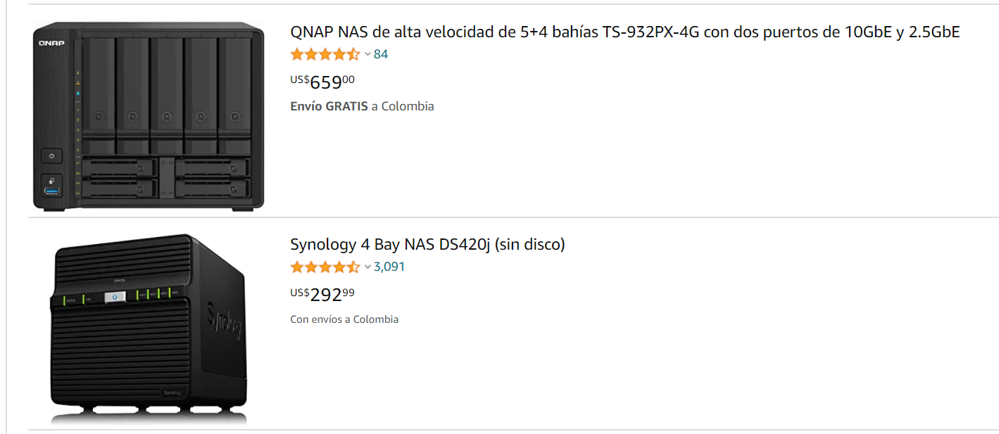
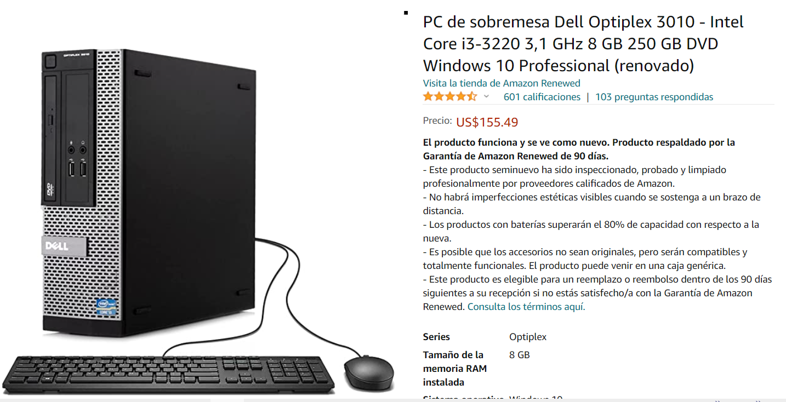
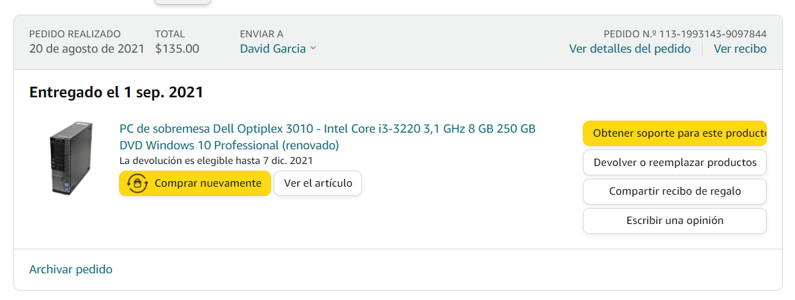

I went for a refurbished dell optiplex

It came with:
- - windows 7
- - core i3 3 gen
- - 450GB (in amazon said only 250GB!)
- - 8GB of ram


There are some options here, and old unused pc, a NAS, a second hand pc.
  
It came with:
Then install a server control panel tool, to manage the storage folders and upload files easily

Plex is a global streaming media service and a client–server media player platform, made by Plex, Inc. The Plex Media Server organizes video, audio, and photos from a user's collections and from online services, and streams it to the players. Wikipedia

You can organize by folders, also can add a cover image and a background image
then in your tv, smart phone or pc you can install plex client app and access to your server

Kevin Day is a retired U.S. Navy Senior Chief Operations Specialist who specialized in radar systems. He is a TOPGUN air intercept controller with more than 20 years experience in strike group air defense including war-time operations. In November of 2004, off the coast of San Diego, Kevin was a radar operator on the USS Princeton, part of the USS Nimitz Carrier Strike Group.